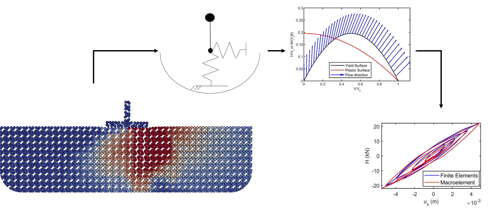
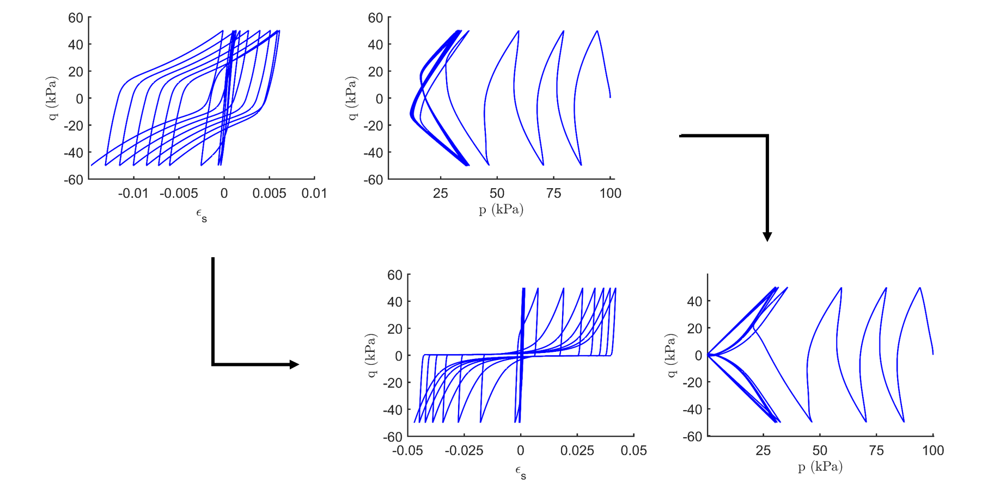
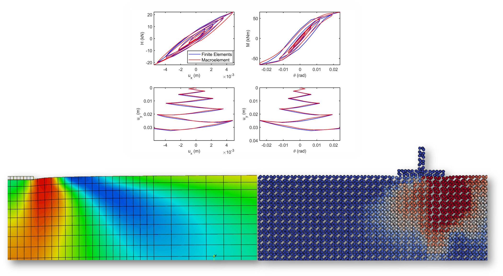
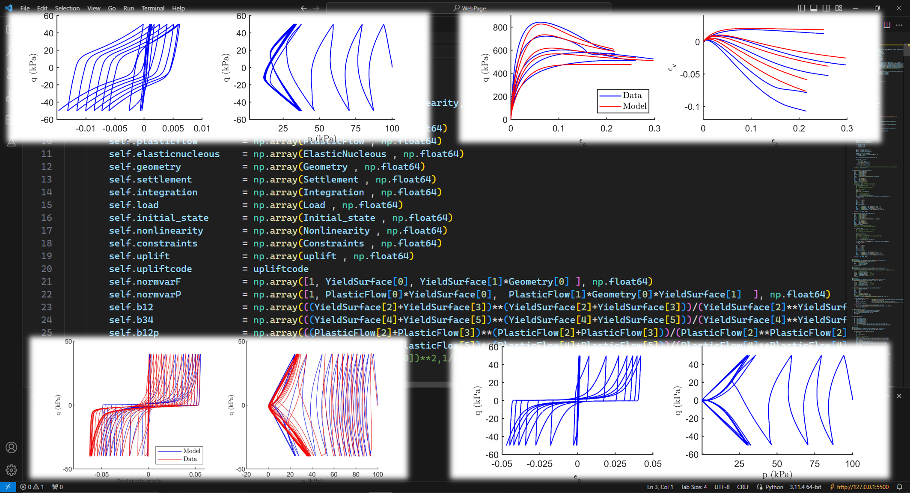
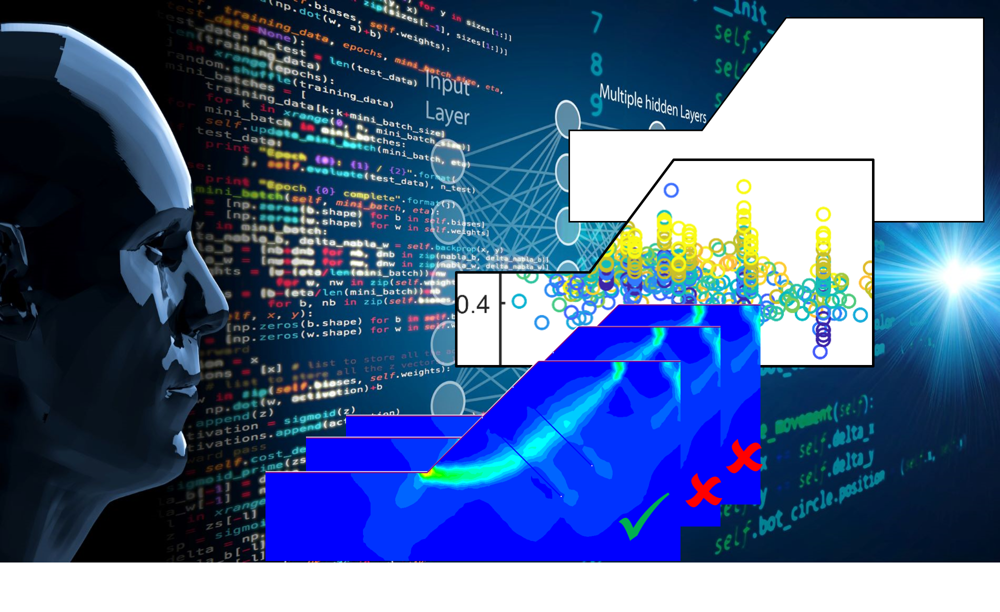

Macroelement model development
¿Why?
To optimize soil-structure interaction simulations. ¿How?
Using numerical simulations, machine learning, and mathematics.
¿What were the results? A reduction between 60-80% of
simulation times, maintaining more than 90% accuracy .

Modified hypoplastic model with fabric anisotropy
¿Why?
To improve simulated results for monotonic, cyclic, drained and undrained simulations. ¿How?
Proposing new density factors, and adding a two state variables.
¿What were the results? An improve of +30% describing sand behavior.

Static and Dynamic simulation of foundations
¿Why?
To understand the behavior of foundations under different loading conditions. ¿How?
Using Finite elements and Material Point Method simulations.
¿What were the results? Realistic simulations of uplift mechanism of foundations.

Element test simulation code in Python
¿Why? To calibrate and modify constitutive models. ¿How?
Using Python OOP and Numba to develop the model.
¿What were the results? An equally fast solution as MATLAB.

Reinforced slope automatized calculation using machine learning
¿Why? To develop faster and accurate solutions for reinforced slopes. ¿How?
Using TensorFlow, XGBoost and Sklearn to develop machine learning models.
¿What were the results? A 80% faster method to obtain a first approach to the design of reinforced slopes.
A coupled mathematical and machine learning model to predict foundation's capacity under combined loads
¿Why? To produce a fast model to predict the capacity of foundations under different types of loads. ¿How?
Coupling Finite Element Limit Analysis with TensorFlow, XGBoost and Sklearn to develop machine learning models.
¿What were the results? A new mathematical model to obtain foundation's limit loads for different geometries.